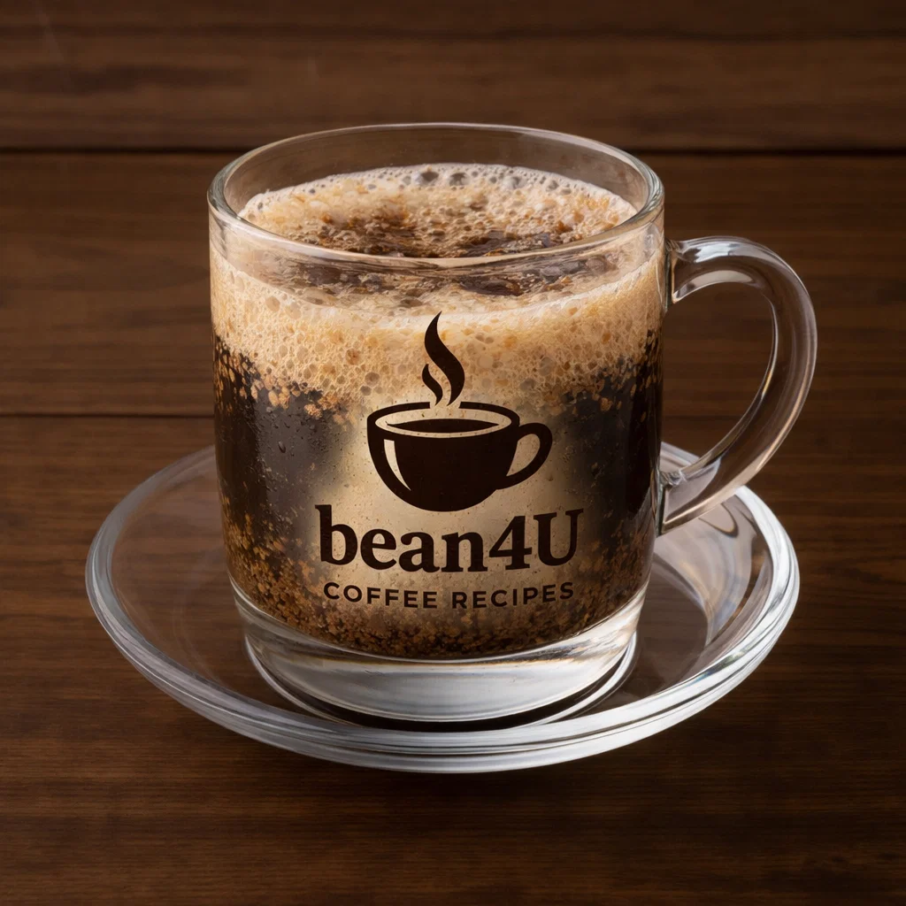

Kopi Tubruk

Ingredients
- Boiling water
- Coarsely ground coffee (strong)
- Sugar to taste
Preparation
- Place coffee grounds in a cup, pour boiling water and let steep for a few minutes.
- Add sugar and let grounds settle before drinking slowly.
- Traditionally unfiltered—sip carefully.
- youtube short quickly explaining it:
- short Explanation
Video from @indonesiancoffee
Channel